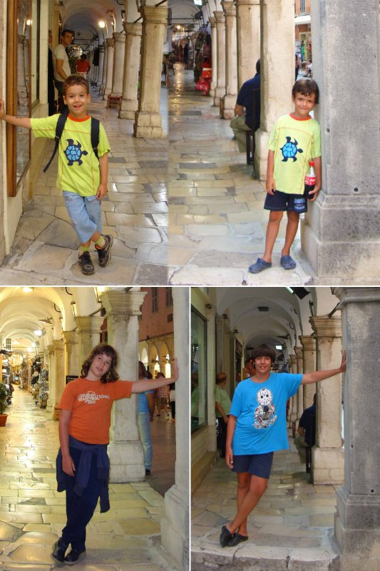

Krf nam je prva ljubav
Kad kažemo more, mislimo na Krf.
Na Krfu smo bili osam puta. Od Lukine pete godine, a kasnije i od Petrovog rođenja.
Krf nam je prva ljubav. Mesto Dasija, koja ima travu na plaži i prirodan hlad od palmi i maslina. Meni je to jednostavno u tom periodu bilo najvažnije. Da deca trčkaraju, a da ih ne peku stopala na pesku. Trčkaraju po travi, imamo puno hlada. U vodi je sitan pesak koji miluje stopala.
.jpg "Krf, Dasija, plaža")
.jpg "Krf, Dasija, plaža")
Jedu mekike sa čokoladom na plaži i ne zna se da li budu musaviji od nje ili od sladoleda.
.jpg "Krf, Dasija, plaža")
.jpg "Krf, Dasija, plaža")
.jpg "Krf, Dasija, plaža")
Osim toga, smeštaji kao da su se takmičili ko će imati lepšu baštu, a svi su uz samo more. Tako da, kada se sklonimo sa plaže, opet imaju gde da trčkaraju i da se igraju.
.jpg "Krf, Dasija, plaža")
Bilo je i dana kada Petar spava, ručak se krčka, a Luka i ja ležimo u ljuljašci, čitamo smešne priče i smejemo se. To su tako drage uspomene.
Bili smo domaći
Najčešće smo bili u bungalovima sa hortenzijama koje su nas svake godine dočekivale u drugoj boji, a gazda bi nam donosio paradajz i krastavac iz bašte. U prodavnici su nas znali i poklanjali lubenicu kad dođemo.
Duška bi, dok je čekao giros, gazda ponudio vinom i čašicom razgovora. Mesaru, kada bismo tražili batak, odvalio bi pola pileta. Čovek koji je izdavao ležaljke na plaži tutnuo bi Luki u ruke neke grickalice, a nama nije naplaćivao ležaljke.
Znali smo svakog prodavca, svaki ćošak. Bili smo domaći.
Uspomene koje su se samo slagale
Uspomene su se kao slojevi samo slegale jedne na druge. Gde god bih prošla, postojala je neka priča. Tu smo našli bebu sovu. Tu morskog konjica. Tu smo lovili krabe. Tu pecali...
.jpg "Krf, Dasija, plaža, beba sova")
.jpg "Krf, Dasija, plaža, morski konjic")
.jpg "Krf, Dasija, plaža, pecanje")
.jpg "Krf, Dasija, plaža, pecanje")
.jpg "Krf, Dasija, plaža, pecanje")
Godinama smo se vozili brodićem sa providnim dnom. Onda dođe ronilac i nosi jastoga, hrani ribice, a tu su i neki kipovi u vodi. Kasnije izađemo na palubu i gledamo šou sa morskim lavovima koji liče na foke.
.jpg "Krf, brod sa staklenim dnom")
.jpg "Krf, brod sa staklenim dnom")
.jpg "Krf, morski lav")
Na Krfu smo bili u prvom Aqualand-u, najvećem u Evropi, sa toboganima gde je bilo spuštanja i u gumi, raznih prskanja, gusarski deo, lenja reka, bazen sa talasima.
.jpg "Krf, Aqualand")
.jpg "Krf, Aqualand")
.jpg "Krf, Aqualand")
.jpg "Krf, Aqualand")
.jpg "Krf, Aqualand")
.jpg "Krf, Aqualand")
.jpg "Krf, Aqualand")
.jpg "Krf, Aqualand")
.jpg "Krf, Aqualand")
.jpg "Krf, Aqualand")
.jpg "Krf, Aqualand")
.jpg "Krf, Aqualand")
.jpg "Krf, Aqualand")
Išli smo na ostrvo Vido, do crkvice sa razglednica, posmatrali avione kako sleću i poleću.
Kako je Krabale došla kod nas
Luka je ulovio baš lepu krabu i poželeo da je ponese kući. Rekla sam mu da je to kraba rođena na slobodi i da nju moramo da pustimo na slobodu a da ćemo naći neku koja se prodaje, ta nije rođena na slobodi. I mi se vratismo u Novi Sad i u prvoj prodavnici kućnih ljubimaca kao pitam, imate li krabu, kad oni imaju. Samo sam zinula. I tako je Krabale došla kod nas.
.jpg "Krabale")
Lubenica i ajkula
Sa Krfa je i priča kada je Luka tražio od tate lubenicu. Tata, sav srećan, ide sa sinom da mu kupi. Kad, ispostavi se da je lubenica mala lopta sa naslikanom lubenicom. Košta kao nekoliko velikih lopti kod nas kući. Šta će tata, obećao je, kupi detetu „lubenicu“.
.jpg "Krf, Dasija, plaža")
Na Krfu je bio i prvi Lukin, a kasnije i Petrov prvi let avionom. Jednom, kad je Luka pažljivije slušao, čuo je da avion može da padne. Što mu nije bilo strašno sve do onog malog pojasa mora između Krfa i kopna. E, tu se uplašio da bi mogla da nas pojede ajkula i više nije hteo da leti kući avionom. Problem je rešen kad smo se dogovorili da ajkuli damo sendvič da ne bude gladna.
Skakali smo po vodi i pevali: „Mi smo morski zečevi, zečevi, zečevi.“
.jpg "Krf, Dasija")
.jpg "Krf, Dasija")
.jpg "Krf, Dasija")
.jpg "Krf, Dasija")
.jpg "Krf, Dasija")
.jpg "Krf, Dasija")
.jpg "Krf, Dasija")
.jpg "Krf, Dasija")
Kroz godine na Krfu

Svaki put kad opet dođemo, samo bi izletale uspomene.
Uveče bismo išli u grad Krf i šetali.
.jpg "Krf")
.jpg "Krf")
.jpg "Krf")
.jpg "Krf")
Išli smo na ostrvo Vido, do crkvice sa razglednica, posmatrali avione kako sleću i poleću.
Kada više nije bilo tako
Krf je bio naš.
Čak je bio i jedan plac koji smo maštali da kupimo i da tu zauvek dolazimo na more, a jednog dana, u penziji, i živimo.
I tako je bilo sve do jednog trenutka kada više nije bilo tako.
Krenuli smo i na druga mora: Palma de Majorka, Sicilija, Tropea, Sitonija, uz još poneki povratak na Krf.
← Nazad na Grčka